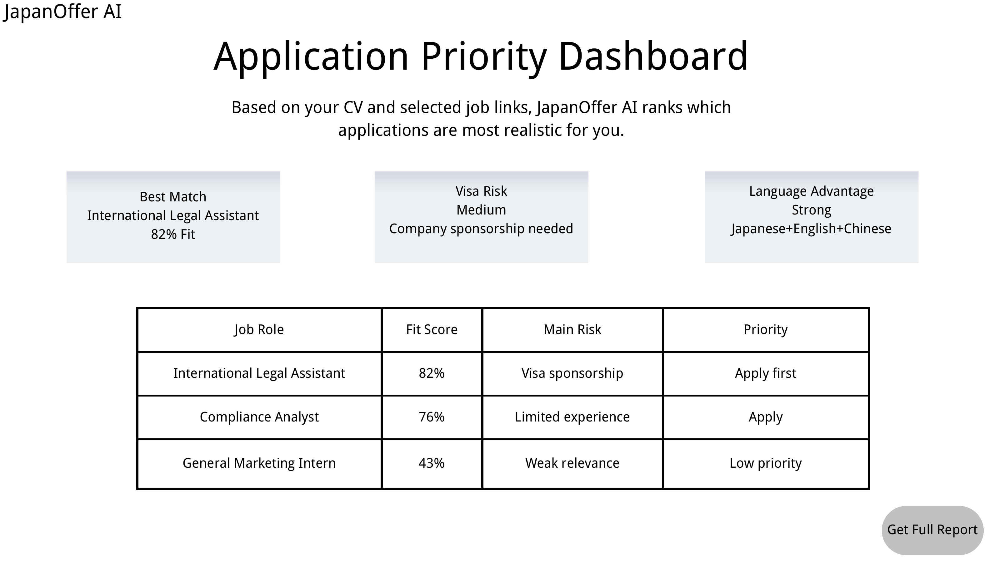

国内竞争越来越卷
很多学生不是不努力，而是不知道除了国内常规路径之外，自己的背景还能打开哪些机会。
Early beta project for cross-border career entry
JapanOffer AI helps students and young job seekers understand which overseas jobs are actually realistic based on background, language ability, visa risk and career direction.
Application Priority Dashboard
| Role | Score | Priority |
|---|---|---|
| Legal Assistant | 82% | Apply first |
| Compliance Analyst | 76% | Apply |
| Marketing Intern | 43% | Low |
Why this matters
很多学生不是不努力，而是不知道除了国内常规路径之外，自己的背景还能打开哪些机会。
语言、签证、公司是否考虑外国人、岗位是否真的现实，这些信息往往比职位描述本身更重要。
系统根据背景、语言能力、目标国家和岗位信息，生成申请优先级，让你先判断路线，再投入时间。
First MVP
Upload your background, compare job opportunities, and see which applications deserve your time first.

Core logic
Does your education and experience fit the role?
Does the role need Japanese, English, Chinese, or a mix?
Could work eligibility or sponsorship become a real barrier?
Does this job actually support your long-term overseas career path?
Project materials
These materials explain the project concept, MVP, business model and long-term product vision.
Prototype PDF
Five-page flow: landing page, CV upload, dashboard, waitlist and confirmation page.
Open PrototypeShort memo
A quick explanation of the pitch, problem, target user, solution, MVP, business model and ask.
Full document
The full founder story, market evidence, route logic, MVP plan, business model and roadmap.
Free beta test
The beta test starts with a short assessment. You do not need to upload a full CV at this stage. If your background fits the early test, you may be invited for a free application priority analysis.
Start Free AssessmentComplete the short assessment to join the free beta test. with your final Wenjuanxing link before public launch.